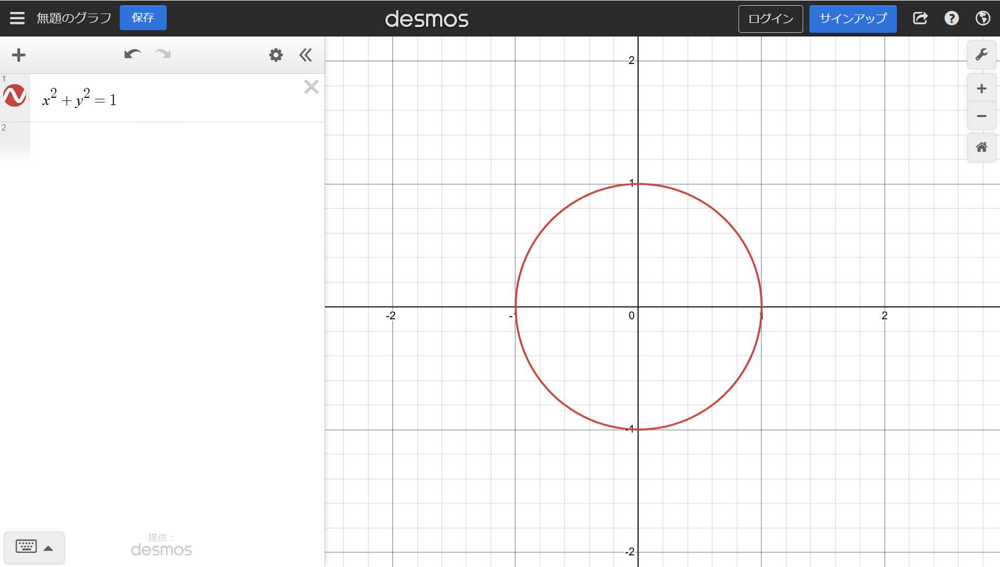
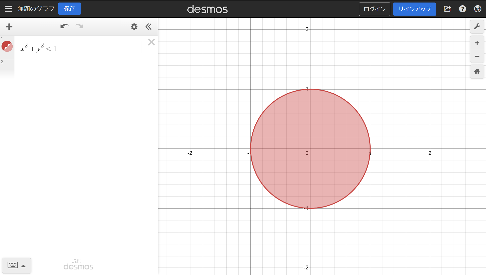
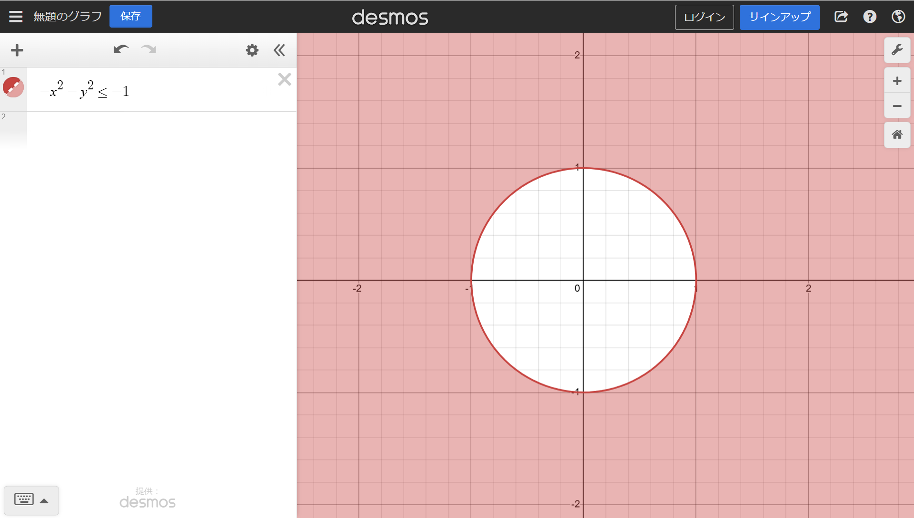
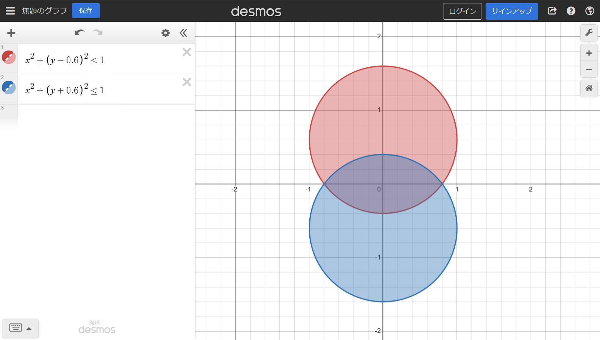
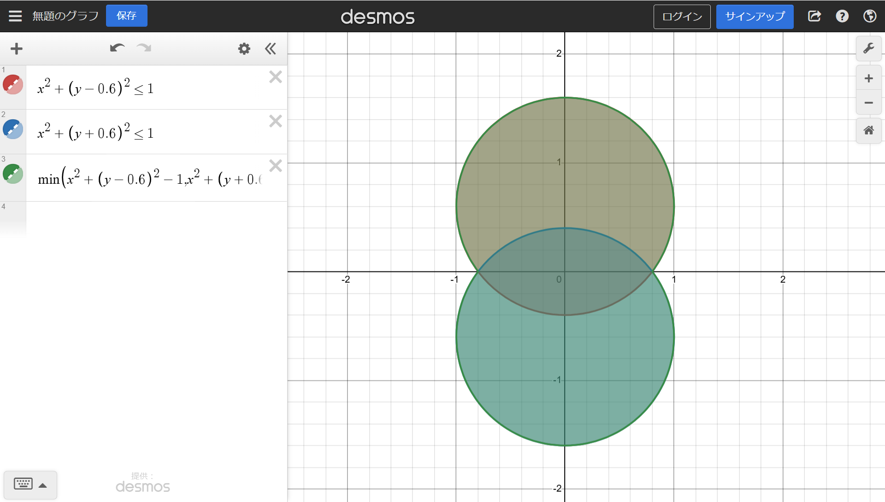
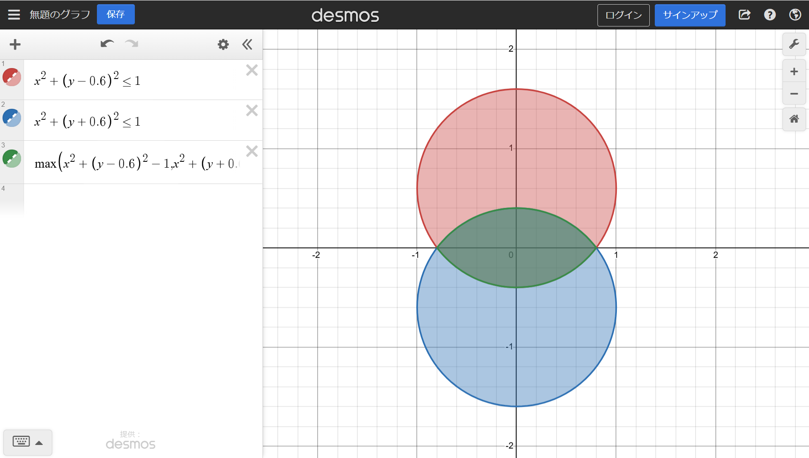
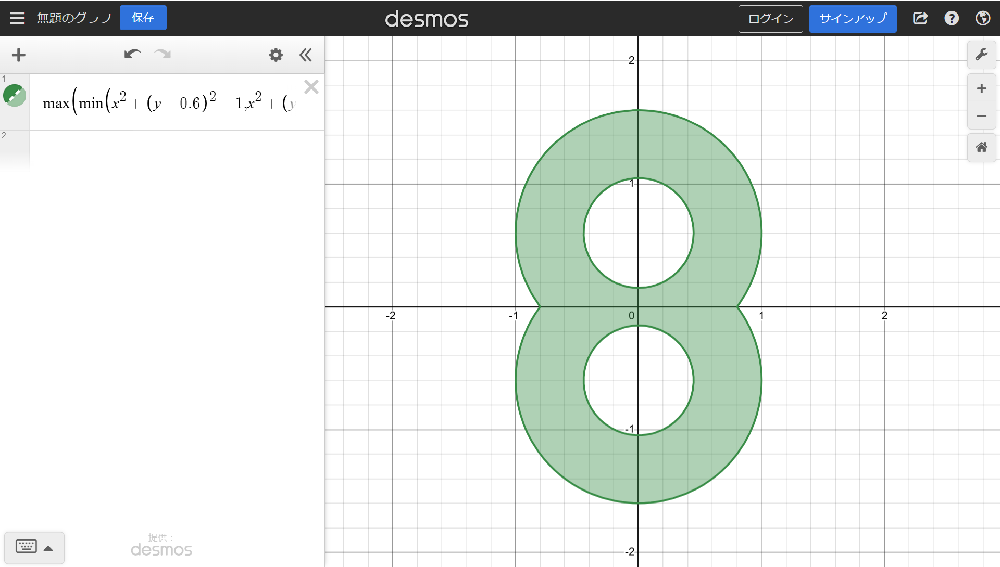

グラフアート、はじめました。
はじめに、
グラフアート初心者なのですが、少し作り方を紹介したいと思います。
このサイトに書かれている式は、Desmosというサイトにコピー＆ペーストすることで、数式を見ることができます。
グラフアートとはなにか
グラフアートとは、グラフを使って絵や文字を描くものです。
例えば、下の式で半径が１の円を描くことができます。
x^{2}+y^{2}=1

書き方
等号を不等号にすることで、面を塗りつぶす事ができます。
x^{2}+y^{2}\le1

また、両辺の符号を全て逆にすると、塗られている部分も逆転します。
これを書くときは、不等号の向きを＜に統一しましょう。
あとで、式を組み合わせるときに揃っているとき組み合わせやすいです。
ここに２つの円のグラフがあります。x^{2}+\left(y-0.6\right)^{2}\le1
x^{2}+\left(y+0.6\right)^{2}\le1

このグラフを合体させるために、min関数を使います。
min関数の中に、不等号をマイナスにして２つの式を入れます。
このとき、不等号の左辺の符号がすべて逆転することに注意してください。
\min\left(x^{2}+\left(y-0.6\right)^{2}-1,x^{2}+\left(y+0.6\right)^{2}-1\right)\le0

できました！
今度は、重なっている部分だけにしましょう。共通部分にはmax関数を使います。
min関数のときと同じように、不等号をマイナスにして２つの式を入れます。
\max\left(x^{2}+\left(y-0.6\right)^{2}-1,x^{2}+\left(y+0.6\right)^{2}-1\right)\le0

できました！
これらを組み合わせることで、数字の８のような形を作ってみました。
\max\left(\min\left(x^{2}+\left(y-0.6\right)^{2}-1,x^{2}+\left(y+0.6\right)^{2}-1\right),-x^{2}-\left(y-0.6\right)^{2}+0.2,-x^{2}-\left(y+0.6\right)^{2}+0.2\right)\le0

最後に、
とても面白かったので、たくさん遊びたいです。
あなたもぜひやってみてください。